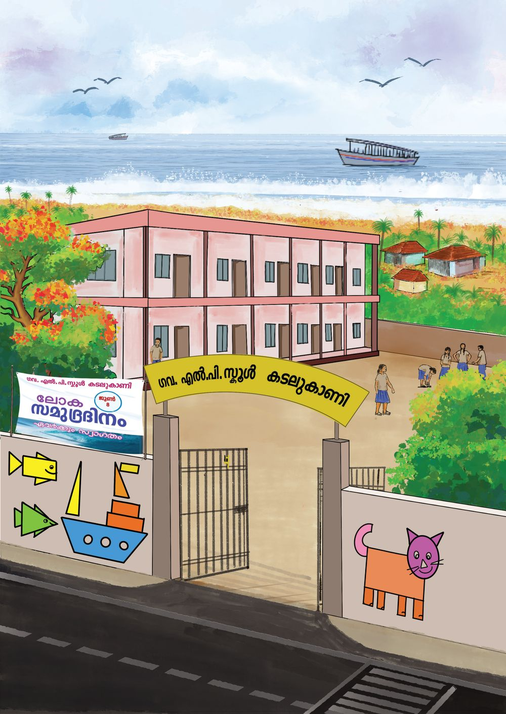
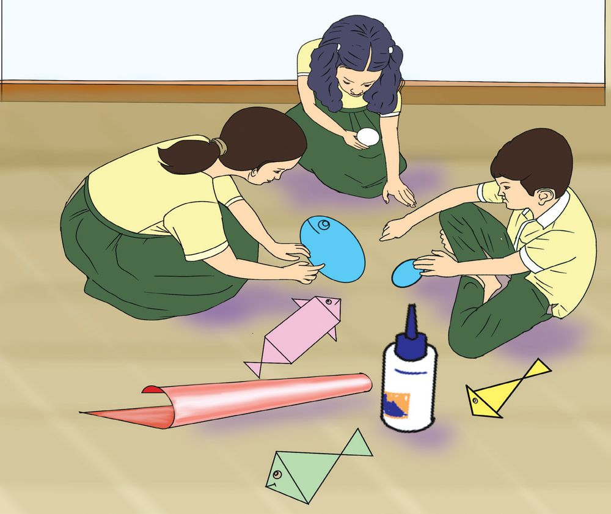
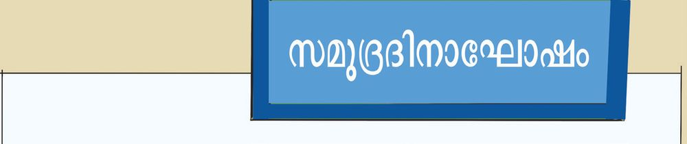
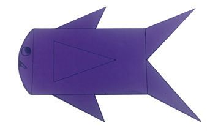
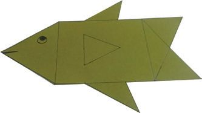
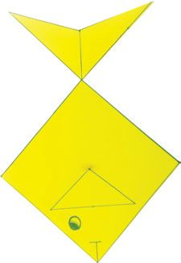
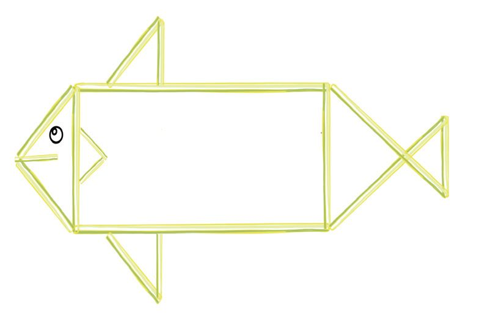
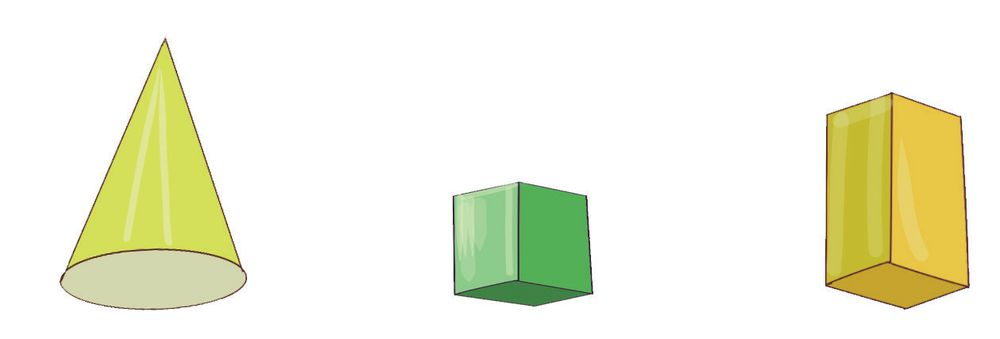

1
വരകൾ രൂപങ്ങൾ
ചിത്രം നോോക്കൂ. എന്തെല്ലാമാണ് കാണുന്നത് ? കൂട്ടുകാരുമായി ചർച്ച ചെയ്യൂ... നോോട്ടുബുക്കിൽ എഴുതൂ...

1
വരകൾ രൂപങ്ങൾ
ചിത്രം നോോക്കൂ. എന്തെല്ലാമാണ് കാണുന്നത് ? കൂട്ടുകാരുമായി ചർച്ച ചെയ്യൂ... നോോട്ടുബുക്കിൽ എഴുതൂ...






ഗണിതം സ്റ്റാൻഡേർഡ് - IV
ചിത്രം നോോക്കൂ... വരയ്ക്കൂ...
ഞാൻ വരച്ചത്
ആദ്യയ പേജിലെ ചിത്രം കണ്ടല്ലോോ... മതിലിലെ ചിത്രങ്ങൾ ശ്രദ്ധിച്ചോോ? അതിൽ നിങ്ങൾക്ക് ഏറ്റവും ഇഷ്ടപ്പെട്ട ചിത്രം വരയ്ക്കൂ...
ദിനാഘോോഷം കടലുകാണി സ്കൂളിൽ ജൂൺ 8 ന് നടക്കുന്ന ദിനാഘോോഷം എന്താണ് ?
നിറം കൊൊടുക്കൂ... ആഘോോഷത്തിന്റെ ഭാഗമായി സ്കൂളിൽ പ്രദർശനം സംഘടിപ്പിക്കുന്നു. അനുവും സുബിയും അതുലും സ്കൂളുംം പരിസരവും അലങ്കരിക്കുന്നതിന് കടലാസുകൊാണ്ട് പലതരത്തിലുള്ള മീനുകൾ ഉണ്ടാക്കി.
8


വരകൾ രൂപങ്ങൾ
അവർ ഉണ്ടാക്കിയ കടലാസ് മീനുകൾ ചരടിൽ കോോർത്ത് തൂക്കിയിട്ടിരി ക്കുന്നത് നോോക്കൂ...
ചിത്രങ്ങൾക്ക് നിറം കൊൊടുത്ത് ഭംഗിയാക്കൂ...
വരയ്ക്കൂ... നിറം കൊൊടുക്കൂ... തന്നിരിക്കുന്ന രൂപത്തതോട് മറ്റ് രൂപങ്ങൾ ചേർത്തുവരച്ച് മീൻ വരയ്ക്കൂ... നിറം കൊൊടുക്കൂ...
പല രൂപങ്ങൾ
കടലാസ് മീനുകളിൽ ഏതെല്ലാം രൂപങ്ങളാണ് കണ്ടത് ? നിങ്ങൾക്ക് അറിയാവുന്ന രൂപങ്ങൾ വരച്ച് പട്ടികയാക്കൂ.
രൂപം
പേര്
9




ഗണിതം സ്റ്റാൻഡേർഡ് - IV
ഈർക്കിൽ മീൻ
ഈർക്കിൽ ഉപയോാഗിച്ച് മീൻ ഉണ്ടാക്കൂ.
ഈർക്കിൽ കഷണങ്ങൾ കടലാസിൽ ഒട്ടിച്ച് അതുൽ തയ്യാറാക്കിയ മീനാണ് ചിത്രത്തിൽ. ഇത്തരം രൂപങ്ങൾ നിങ്ങളുംം തയ്യാറാക്കൂ. ദിനാഘോോഷങ്ങൾക്ക് അവ ഉപയോോഗിക്കണേ...
ചിത്രശലഭം ആഘോോഷത്തിന് സ്കൂളുംം ക്ലാസും അലങ്കരിക്കണം. അതിനായി പുതിയ രൂപങ്ങൾ വരയ്ക്കാം. വിവിധ രൂപങ്ങൾ ഉപയോാഗിച്ച് വരച്ച ചിത്രശലഭം നോോക്കൂ. നിറം കൊൊടുത്ത് ശലഭത്തെ ഭംഗിയാക്കൂ... ശലഭത്തിലെ രൂപങ്ങൾ ഏതെല്ലാമെന്ന് എഴുതൂ.
പസിൽ കോർണർ എന്നെ നിർമ്മിക്കാൻ 3 വര മതി. ഞാനാര്? 10

വരകൾ രൂപങ്ങൾ
വശം അളക്കാം കണക്കുപെട്ടിയിലെ ഒരു ചതുരക്കാർഡ് ഉപയോാഗിച്ച് ചതുരം വരയ്ക്കൂ. ഞാൻ വരച്ചത്
ചതുരത്തിന് എത്ര വശങ്ങൾ ഉണ്ട് ? മൂലകളോോ ? നിങ്ങൾ വരച്ച ചതുരത്തിന്റെ വശങ്ങളുടെ നീളം സ്കെയിൽ ഉപയോാഗിച്ച് അളന്നെഴുതൂ... വശം 1
വശം 2
വശം 3
വശം 4
.................. സെന്റിമീറ്റർ
.................. സെന്റിമീറ്റർ
.................. സെന്റിമീറ്റർ
.................. സെന്റിമീറ്റർ
എന്തെങ്കിലും പ്രത്യേേകതയുണ്ടോോ? നിങ്ങളുടെ കണ്ടുപിടിത്തം എഴുതൂ... ഞാൻ കണ്ടുപിടിച്ചത്
11


ഗണിതം സ്റ്റാൻഡേർഡ് - IV
ഈർക്കിൽ ചതുരം 5 സെന്റിമീറ്റർ, 8 സെന്റിമീറ്റർ നീളമുള്ള രണ്ട് വീതം ഈർക്കിൽ കഷണം
ഉപയോോഗിച്ച് അതുൽ, ബിൻസ എന്നിവർ ഉണ്ടാക്കിയ രൂപങ്ങൾ നോോക്കൂ.
അതുൽ
ബിൻസ
ആരുണ്ടാക്കിയ രൂപമാണ് ചതുരം? എന്തുകൊൊണ്ട് ? അതുൽ ഉണ്ടാക്കിയ ചതുരത്തിൽ ഇടതും വലതും വശങ്ങൾ കുത്തനെയാണ്. ബിൻസ ഉണ്ടാക്കിയ രൂപം ചതുരമല്ല. എന്തുകൊാണ്ട് ? ഞാൻ കണ്ടുപിടിച്ചത്
12

വരകൾ രൂപങ്ങൾ
ചതുരത്തിന്റെ പ്രത്യേേകതകൾ ചതുരത്തിന്റെ പ്രത്യേേകതകൾ എഴുതൂ... • ചതുരത്തിന് 4 വശങ്ങൾ ഉണ്ട്. • മുകളിലും താഴെയുമുള്ള വരകൾ വിലങ്ങനെയും ഇടതും വലതുമുള്ള വരകൾ കുത്തനെയുമാണ്. • •
ചതുരം പലതരം കണക്കുപെട്ടിയിലെ ചതുരക്കാർഡുകൾ ഉപയോോഗിച്ച് അനൂപ് വരച്ച ചതുരങ്ങളാണ് ചുവടെ കൊാടുത്തിരിക്കുന്നത്. വശം 4
വശം 2
വശം 1
വശം 3
വശം 3
വശം 2
വശം 4
വശം 1
ചതുരം 1
ചതുരം 2
വശം 4
വശം 2
വശം 1
വശം 1
ചതുരം 3
ചതുരം 4
വശം 3
വശം 2
വശം 3
വശം 2
വശം 4
13


ഗണിതം സ്റ്റാൻഡേർഡ് - IV
സ്കെയിൽ ഉപയോോഗിച്ച് വശങ്ങൾ അളന്ന് പട്ടികയിലെഴുതുക. ചതുരം
വശം 1 (സെമീ)
വശം 2 (സെമീ)
വശം 3 (സെമീ)
വശം 4 (സെമീ)
1 2 3 4
അളവുകളുടെ പ്രത്യേേകത എന്താണ് ? ഞാൻ കണ്ടുപിടിച്ചത്
മറ്റൊൊരു ചതുരം പലതരം ചതുരങ്ങൾ കണ്ടല്ലോോ. അതിൽ മൂന്നാമത്തെയും നാലാമത്തെയും ചതുരങ്ങൾ നോോക്കൂ... ഇത്തരം ഒരു ചതുരമുണ്ടാക്കാൻ വേണ്ട ഈർക്കിൽ കഷണങ്ങളെടുക്കൂ...
പസിൽ കോർണർ
എത്ര മൂലകൾ? ചതുരക്കടലാസിൻ്റെ ഒരു മൂല മുറിച്ചു കളഞ്ഞു. ഇപ്പോോൾ കടലാസിന് എത്ര മൂലകളുണ്ട് ?
നിങ്ങളെടുത്ത ഈർക്കിൽ കഷണങ്ങളുടെ നീളത്തിൻ്റെ പ്രത്യേേകത എന്താണ്? 14


വരകൾ രൂപങ്ങൾ
സമചതുരത്തിന്റെ പ്രത്യേേകതകൾ എഴുതൂ... ഞാൻ കണ്ടുപിടിച്ചത്
• 4 വശങ്ങളുണ്ട്. • • •
സമചതുരം നാല് വശങ്ങൾക്കും ഒരേ നീളമുള്ള ചതുരമാണ് സമചതുരം.
എല്ലാ സമചതുരവും ചതുരമാണ്. എന്നാൽ എല്ലാ ചതുരവും സമചതുരമല്ല.
ചതുരത്തിനുള്ളിൽ സമചതുരം ഈ ചതുരത്തിനുള്ളിൽ ഒരു വര മാത്രം വരച്ച് സമചതുരം വരയ്ക്കുക.
സമചതുരക്കട്ട ഉണ്ടാക്കാം ചിത്രത്തിലേതുപോോലെ സമചതുരങ്ങൾ കട്ടിക്കടലാസിൽ വരച്ച് വെട്ടിയെ ടുക്കുക. ടീച്ചറിന്റെ സഹായത്തോോടെ സമചതുരക്കട്ട ഉണ്ടാക്കുക.
15


ഗണിതം സ്റ്റാൻഡേർഡ് - IV
ജിയോോബോോർഡ് ഗണിതലാബിലെ ജിയോോബോോർഡിൽ റബ്ബർ ബാന്റ് ഉപയോോഗിച്ച് ചതുരങ്ങളുംം സമചതുരങ്ങളുംം ഉണ്ടാക്കുക. അവയുടെ വശങ്ങളുടെ നീളം കണ്ടുപിടിക്കുക. ഒരു ആണിയും അതിനോോട് ഏറ്റവും അടുത്തുള്ള 3 ആണിയും ചേർത്ത് റബ്ബർ ബാന്റിട്ടാൽ എന്ത് രൂപം കിട്ടുംം?
ഗണിതക്ലബ്ബ് ഗണിതക്ലബ്ബ് ഉദ്ഘാടനത്തിന് കൂട്ടുകാർ ക്ലാസ് അലങ്കരിച്ചത് നോോക്കൂ...
16



വരകൾ രൂപങ്ങൾ
ഇതിൽ എന്തൊാക്കെ രൂപങ്ങൾ ഉണ്ട് ? അലങ്കാരത്തിനായി അവർ ഉപയോോഗിച്ച ചില രൂപങ്ങളാണ് ചുവടെയുള്ള ചിത്രത്തിൽ. രൂപത്തിന് താഴെ അവയുടെ പേരെഴുതൂ.
കണ്ടെത്താം ചുറ്റുപാടുംം കാണുന്നതും നിങ്ങൾക്ക് പരിചയമുള്ളതുമായ വസ്തുക്കളെ ആകൃതിയുടെ അടിസ്ഥാനത്തിൽ പട്ടികപ്പെടുത്തൂ. വസ്തുക്കളുടെ പേര് താഴെ എഴുതൂ. ചതുരക്കട്ട
ഗോാളം
സമചതുരക്കട്ട
വൃത്തസ്തൂപിക
ടാൻഗ്രാം ചിത്രത്തിലെ വിവിധ രൂപങ്ങൾ ക്രമീകരിച്ച ചിത്രങ്ങളാണ് പാഠപുസ്തകത്തിൻ്റെ കവർ പേജിൻ്റെ പിൻഭാഗത്തുള്ളത്. ടാൻഗ്രാമിലെ രൂപങ്ങൾ ഉപയോോഗിച്ച് പുതിയ ചിത്രങ്ങൾ ഉണ്ടാക്കൂ.
17

ഗണിതം സ്റ്റാൻഡേർഡ് - IV
1. താഴെ തന്നിരിക്കുന്ന ചിത്രങ്ങളിൽ ചതുരത്തിന് ശരി () അടയാളം
കൊാടുക്കുക. സമചതുരത്തിന് ചുവപ്പ് നിറവും കൊൊടുക്കുക.
2. മനു ആശംസാകാർഡ് ഉണ്ടാക്കുകയാണ്. വശത്തിന്റെ നീളം 8 സെന്റി മീറ്റർ വീതം വരുന്ന ഒരു സമചതുരക്കാർഡിന്റെ 4 വശത്തും കമ്പിളിനൂൽ ഒട്ടിച്ചു. എത്ര സെന്റിമീറ്റർ നീളമുള്ള നൂലാണ് മനു ഉപയോാഗിച്ചത് ? 3. ചതുരക്കാർഡ് ഉപയോാഗിച്ച് നോാട്ടുബുക്കിൽ ഒരു ചതുരം വരയ്ക്കൂ.
ചെറിയ വശത്തോാട് ചേർന്നുവരുന്ന ഒരു സമചതുരവും വലിയ വശ ത്തോാട് ചേർന്നുവരുന്ന വേറൊാരു സമചതുരവും സ്കെയിൽ ഉപയോാ ഗിച്ച് വരയ്ക്കുക. വശങ്ങൾ അളന്നെഴുതുക.
4. താഴെ തന്നിരിക്കുന്നത് ചില രൂപങ്ങളുടെ വശത്തിന്റെ അളവാണ്. ചതുരം വരയ്ക്കാൻ കഴിയുന്ന അളവുകൾ ഏതാണ് ? A) 5, 8, 6, 7 B) 5, 6, 7, 9
C) 5, 8, 5, 8 D) 8, 8, 5, 8
5. താഴെ തന്നിരിക്കുന്ന അളവുകളിൽ സമചതുരം വരയ്ക്കാൻ കഴിയാത്തത് ഏത് ? A) വശത്തിന്റെ നീളം 8 വീതം
B) 5, 5, 5, 5
C) 4 വശവും 6 വീതം
D) 5, 5, 6, 6
6.
അടുത്ത ചിത്രം ഏതാണ് ?
(A)
18
(B)
(C)
(D)